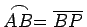
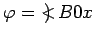
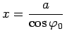
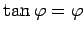
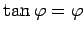
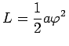
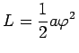
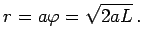

Evolvente des Kreises heißt eine Kurve, die vom Endpunkt eines fest gespannten Fadens beschrieben wird, wenn dieser von einem Kreis abgewickelt wird, so daß .
Die Gleichung der Evolvente des Kreises lautet in Parameterform
wobei a der Radius des Kreises ist und . Die Kurve besitzt zwei Zweige symmetrisch zur x-Achse. Die Spitze A liegt bei (a,0), die Schnittpunkte mit der x-Achse liegen bei , wobei  die Wurzeln der Gleichung  sind.
die Wurzeln der Gleichung  sind.
Die Länge des Bogens  beträgt .
beträgt .
Der Krümmungsradius ist  Der Krümmungskreismittelpunkt B liegt auf dem Kreis.